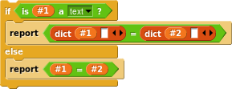

Currently the only way to create dicts is with the block. The first input is for the key and the second for the value. The arrows always add or remove a pair each time. Keys must always be strings.
Access
A dict can be read from with the block. It always converts from the key to te value. The block is not used for much, but it is there for completion.
Mutation
There are two functions to modify dicts. adds a pair or replaces a value, while removes a pair.
Looping
With the blocks above, there is no way to find what keys it has, only how many and what values are related to each one. That is fixed by the block. A dict can be looped through with The block can be recreated with
Case Sensing
Dict keys are case sensitive. This means that you can define a case sensitive equals block: "/>